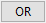

関連動画はこちら：Worksheet Query
関連動画はこちら：Worksheet Query
 関連動画はこちら：Worksheet Query
関連動画はこちら：Worksheet Query
ワークシートクエリメニューコマンドはOriginにユーザー指定の条件式に基づいてアクティブワークシート内のデータを検索するように指示します。見つけられたデータ値は、（ａ）別のワークシートに抽出される（例：値がコピーされて貼り付けられる）か、または（ｂ）条件を満たすセルが選択されるかまたは特定の色で塗りつぶされます。
2つのメインパネル（「左パネル」と「右パネル」と呼びます）に加えて、ファイル（クエリの保存と読み込み）、スクリプト（データの前処理用）、および関数（挿入用）のメニューバーがあります。
Origin 2019bより前では、名前ではなく別名を使用してデータの列を参照していました。別名は引き続き使用できます--ワークブックでスプレッドシートのセル表記がオフになっている場合は、使用する必要があります。詳細については、スプレッドシートのセル表記、エイリアスの使用、および列の命名に関する注意 を参照してください。 |
ワークシートクエリツールを開くには:
選択条件ボックスに条件を入力したら、OKまたは適用ボタンをクリックしてクエリを実行します。
左側のパネルには、アクティブなワークシートのすべての列とそれらに関する基本情報が一覧表示されます。列の抽出のボックスをオンまたはオフにして、どの列を抽出するかを決定します。
左側のパネルを右クリックしてショートカットメニューからコンポーネントを選択または有効にすることで、各列に表示する情報を制御できます。
| 抽出 |
このメニューコマンドを使用して、抽出チェックボックス列を表示するかどうかを指定します。これらのチェックボックスを使用して、抽出される列を指定できます。 |
|---|---|
| インデックス |
このメニューコマンドを使って、列番号を表示するかどうかを指定します。 |
| 名前 |
このメニューコマンドを使って、ロングネームが存在する場合ロングネームを表示するかどうかを指定します。ない場合、列のショートネームを表示します。 |
| ショートネーム |
このメニューコマンドを使って、列ショートネームを表示するかどうかを指定します。 |
| ロングネーム |
このメニューコマンドを使って、列ロングネームを表示するかどうかを指定します。 |
| タイプ |
このメニューコマンドを使って、列番号を表示するかどうかを指定します。 |
| フォーマット |
このメニューコマンドを使って、列フォーマットを表示するかどうかを指定します。 |
| 最初の値 |
このメニューコマンドを使って、列の最初の値を表示するかどうかを指定します。 |
| 抽出を全てチェック |
このメニューコマンドを使用して、抽出列のすべてのチェックボックスをオンにします。 |
| 全ての抽出をクリア |
このメニューコマンドを使用して、抽出列のすべてのチェックボックスをオフにします。 |
| 選択したすべての列の抽出を確認します |
ワークシートクエリ「を開く前にワークシートで選択していた列（例えば編集：選択）があることが考えられます。その場合、このメニューコマンドを使うことでソースワークシートで事前に選択していた列のみを抽出のチェックボックスでチェックすることができます。このメニューは、ソースワークシートとこのワークシートクエリダイアログボックスの間でインタラクティブな選択操作を実行する場合に役立ちます。 |
右側のパネルには、条件編集ボックス、出力コントロール、およびその他のコントロールがあります。
ダイアログボックスのこの部分は、次のいずれかが当てはまる場合にのみ表示されます（参照）。
別名を使用している場合は、左側のパネルで列を選択してから、 ボタンを使用してそれらを列をテスト用の列変数の選択リストに移動します。列を移動すると、条件を定義するときに、列の名前またはインデックスの代わりに使用できる別名が作成されます。
ボタンを使用してそれらを列をテスト用の列変数の選択リストに移動します。列を移動すると、条件を定義するときに、列の名前またはインデックスの代わりに使用できる別名が作成されます。
| 別名 | これにより、各列に別名を定義できます。その後、この別名を使用して条件を構築することができます。別名は自由に編集できます。セルをダブルクリックして新しい別名を入力し、ボックスの外側でクリックします。別名の長さは複数の英数字にすることができますが、スペースを含めることはできません。 |
|---|---|
| 列 | これは列名を表示するためのものです。 |
ワークシートクエリツールは、ユーザーが定義した条件式に従って、ワークシート内のデータを選択、抽出、または色分けするために使用されます。条件式を選択条件テキストボックスに入力します。
i 変数を使います。
たとえば、列Aの値が0より大きい行を抽出するには、次のように入力します。
A>0
または、
Col(A)>0
列Aに対して、例えば「Temperature」という別名を指定していれば、次のように使うことができます。
Temperature > 0
テキストの条件を使ってワークシートのデータを抽出するには、次のシンタックスを使います。
Col(ColumnName)[i]$ == "text";
例えば、
Col(Station)[i]$ == "Northwest";
|
Note: テキスト条件を使ってデータを抽出するときに、Originは大文字小文字を区別しないフィルタを使っています。 |
式の作成には、以下にリストされている論理演算子および関係演算子のいずれかを使用できます。さらに、任意の算術演算子（+、 - 、*、/、^）を使用できます。
| 演算子 | 意味: |
|---|---|
|
> |
より大きい |
|
>= |
以上 |
|
< |
より小さい |
|
<= |
以下 |
|
== (or =) |
等しい |
|
!= (NOT) |
等しくない |
|
&& (AND) |
かつ |
|
|
または |
これらのボタンの使用はオプションです（要素を直接選択条件ボックスに入力できます）が、これらのボタンを使用するといくつかのキーストロークを節約できます。
| ボタン | 使用方法 | ||
|---|---|---|---|

|
式に列変数と条件を追加するために使用されます。
| ||
| 選択条件ボックスで式の一部または全部を強調表示し、削除をクリックして削除します。 | |||
| 「AND」を条件文に追加. | |||
|  | 「OR」を条件文に追加. | ||
| 「NOT」を条件文に追加. | |||
| 「左括弧」を条件文に追加 | |||
| 「右括弧」を条件文に追加 | |||
| このボタンをクリックして、テストを実行します。条件に合うデータが見つかったら、見つかった結果の数がワークシートクエリダイアログの見つかった行:に表示され、結果の行が元のワークシートで選択されます。 |
分割する行範囲を指定します。
| 列の追加 1=真、0=偽 |
ソースワークシートに新しい列を追加して、条件が満たされているかどうかを示します。「はい」の場合は1、「いいえ」の場合は0です。 |
|---|---|
| 新しいワークシートに抽出する |
ソースワークブックの新しいワークシートにデータを抽出します。 |
| 新しいブックに抽出する |
データを新しいブックに抽出します。 |
| 指定したシートに抽出 |
指定したワークシートにデータを抽出します。このオプションを選択すると、ワークシート名と開始列を指定出来ます。（デフォルトは1に設定されています） |
| 指定色で埋める |
クエリで見つかったすべてのセルを指定の色で塗りつぶします。 |
| 選択 |
クエリで見つかったセルをすべて選択します。シート内のすべての列が入力として選択されている場合、ブロックセルの代わりにクエリを満たす行全体がここで選択されていることに注意してください。 |
| サンプルのロード |
組込み済のサンプルを読み込みます。 |
|---|---|
| ロード |
保存した条件式を読み込みます。 |
| 保存 |
現在の条件式を保存します。 |
| 名前を付けて保存... |
新しい名前を付けて条件式を保存します。 |
データクエリの前に実行されるLabTalkスクリプトを設定します。これは条件検索のための適切なデータを準備するのに役立ちます。データループ選択前に実行するスクリプトで、If条件の前に実行するスクリプトを設定できます。
Originは実際には以下のようにデータクエリルーチンを実行します。
2列あるとします。Col（a）にはデータがあります。Ｃｏｌ（ｂ）は、Ｃｏｌ（ａ）から抽出されるセルの行番号として使用される３つの数を含みます。
データループ選択前に実行するスクリプトを次のようにセットします。
j=1;
If条件前のスクリプトを実行します。
if( i == col(b)[j] ) { temp = col(a)[i]; j++; }
次の条件でワークシートのデータを抽出します。
A == temp
テストボタンをクリックすると、Originは行1, 4, 7を選択します。
制御条件またはloopスクリプトをロードする簡単な方法があります。データループ選択前に実行するスクリプト ボックスまたは、 IＦ条件前に実行するスクリプト ボックスでスクリプトを実行する場合、編集ボックスを右クリックし、メニューの下部にある条件/ループ を選択し、条件構造やループ構造を選択します。シンタックスは簡単なコメントでカーソルに追加されます。 |
|
Note: このスクリプトを使用するには、Origin 8.0 SR3 以上が必要です。 |
クエリ条件を構築するために、いくつかの分類されたリストから関数を挿入することができます。 最近使った関数はサブメニューから利用できます。この関数メニューは、値の設定ダイアログボックスにあるメニューと同じです。
これらの関数は、LabTalk 関数 と 組み込みOrigin C関数を含みます。
関数選択にユーザ定義関数を追加する方法については、値の設定ダイアログでユーザ定義ユーザ定義関数を作成する方法をご覧ください。
関数についての詳細は、LabTalkがサポートしている関数を参照してください。
また、事前定義変数 サブメニューから、事前に定義した変数や、クエリ条件を使用出来ます。使用できる変数と定数に関しては こちら をご参照ください。
 (OR)
(OR)